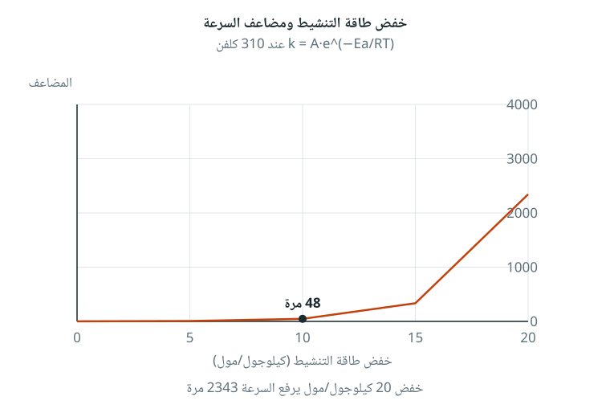

الإنزيم والنشاط التحفيزي
Enzyme
بروتين يسرّع تفاعلًا حيويًّا بخفض طاقة تنشيطه عبر تثبيت الحالة الانتقالية، دون تغيير التغيّر الطاقي الكلي ولا موضع التوازن، ويعود إلى حالته بعد كل دورة.
الإنزيم بروتين يحفّز تفاعلًا حيويًّا بخفض طاقة التنشيط دون أن يغيّر حرارة التفاعل النهائية. يعمل بموقع فعال ذي شكل مكمّل للمرحلة الانتقالية للمتفاعلات، فيثبّت الحالة الانتقالية أكثر مما يثبّت المتفاعلات، فتنخفض الحاجز الطاقي بينهما.
الإنزيم لا يُستهلك ويعود إلى صورته بعد كل دورة، لذلك تعبّر كفاءته عن عدد جزيئات المادة المحوّلة لكل جزيء إنزيم في الثانية. التحفيز ينطبق على مادة محددة، فتبدأ سلسلة الاستقلاب من إنزيم يقرّر أي مادة تُحوّل، وهذا الاختيار هو ما يجعل التنظيم الخلوي ممكنًا عبر التثبيط الرجعي وضبط نسخ الجينات.
الآلية
كيف يحدث الأمر على مستوى الجسيمات أو المتغيّرات المباشرة
يبدأ التفاعل بتصادم جزيئات تملك طاقة كافية لتجاوز الحاجز، وطاقة التنشيط هي هذا الحاجز. الإنزيم يوفّر مسارًا بديلًا منخفض الحاجز: يستقبل المتفاعلات في تجويف فعال تظهر فيه سلسلة جانبية حمضية أو قاعدية تزيل بروتونًا أو تضيفه، أو أيون معدني ينسّق الرابطة، فتستقر الحالة الانتقالية بروابط هيدروجينية وأيونية وضعية. المرحلة المحددة للسرعة غالبًا تكوّن المعقد إنزيم–مادة أو تحلّله، ويوصف ذلك بنموذج ميكالِس–مِنتِن: v = Vmax·[S]/(Km + [S]). عند تشبّع المواقع تصبح السرعة قصوى ولا تزيد بزيادة المادة.
الأرقام والوحدات
العلاقات والوحدات والنطاقات العددية التي تسند الشرح
سرعة التحفيز تتبع أرينيوس: k = A·e^(−Ea/RT). بخفض Ea مقدار 10 كيلوجول/مول عند 310 كلفن يزداد المعامل الأُسّي e^(10000/(8.314 × 310)) = 48 مرة. وخفض مقداره 20 كيلوجول/مول يرفعه 2343 مرة. لهذا يحتاج تفاعل بلا إنزيم إلى ساعات أو أيام بما يحدث إنزيميًّا في أجزاء من الثانية. معدلات التحويل kcat تتراوح بين 10² و10⁶ جزيء في الثانية للإنزيم الواحد، والكَتَالاز في طرفها الأعلى. ويعبّر Km عن تركيز المادة الذي يعطي نصف السرعة القصوى، ولا يشير إلى مقدار المنتج.
الفرق الدقيق
المفهوم الملتبس الذي يُخلَط به، وأين ينفصلان
الخلط الأول: الإنزيم لا يرفع حرارة التفاعل ولا يغيّر إشارتها؛ التغير الطاقي القياسي ΔG ثابت، والمتغيّر هو طاقة التنشيط فقط. الثاني: الإنزيم لا يزيح موضع التوازن بل يقرّبه زمنيًّا، والاتجاه النهائي حكمه للترموديناميكا. الثالث: «الطاقة المنشّطة» ليست حرارة مضافة، بل حاجز طاقي على المسار. الرابع: المرافق الإنزيمي (coenzyme) ليس بروتينًا، بل جزيء عضوي صغير مثل NAD⁺ يرتبط بالإنزيم ويعمل معه، ويُميَّز عن الأيون المعدني المساعد factor.
حدود التعريف
أين ينكسر التعريف أو النموذج وما الذي لا يفسّره
نموذج ميكالِس–مِنتِن يفترض حالة مستقرة وتركيز مادة أكبر بكثير من تركيز الإنزيم، وينهار عند الإنزيمات التنظيمية ذات المواقع المتعددة حيث يكون المنحنى سينيًّا لا قطعًا زائدًا. الأرقام المقيسة على إنزيم منقّى لا تنطبق على الخلية حيث التركيزات متغيرة والحشو الجزيئي يبطئ الانتشار. وفوق 50–60 °م تفقد البروتينات بنيتها الثالثة وتتوقف، فمنحنى النشاط مع الحرارة يرتفع ثم يهبط هبوطًا حادًّا لا أُسّيًّا. كما أن بعض الإنزيمات لا تكون فعالة إلا بعد تعديل بعد الترجمة أو ارتباط بعامل مساعد.

| الكمية | القيمة | المصدر |
|---|---|---|
| مضاعف السرعة عند خفض طاقة التنشيط 10 كيلوجول/مول و310 كلفن | 48 مرة | [2] |
| مضاعف السرعة عند خفض 20 كيلوجول/مول | 2343 مرة | [2] |
| الحد الأعلى لمعدل التحويل لكل جزيء إنزيم | 10⁶ جزيء/ثانية | [1] |
| ثابت الغازات R المستخدم في حساب أرينيوس | 8.314 جول/(مول·كلفن) | [2] |
المصادر
- 1 Biology 2e — 6.5 Enzymes — OpenStax. openstax.org/books/biology-2e/pages/6-5-enzymes · اطُّلع عليه 2026-11-16
- 2 Biology 2e — 6.2 Potential, Kinetic, Free, and Activation Energy — OpenStax. openstax.org/books/biology-2e/pages/6-2-potential-kinetic-free-and-activation-energy · اطُّلع عليه 2026-11-16
استشهد بهذا المصطلح
الصيغتان مبنيتان من بيانات الصفحة نفسها: العنوان والتاريخ ورابط النسخة المنشورة.
الإنزيم والنشاط التحفيزي — Enzyme. (2026). ديوان المعرفة — انفراد. https://infiradev.com/diwan/terms/enzyme.html
@misc{enzyme2026,
title = {الإنزيم والنشاط التحفيزي},
titleaddon = {Enzyme},
howpublished = {{ديوان المعرفة — انفراد} — مرجع علمي عربي},
year = {2026},
url = {https://infiradev.com/diwan/terms/enzyme.html},
urldate = {2026-11-16},
note = {مراجعة علمية: مراجعة آلية — ديوان المعرفة (روابط المصادر + عقد المحتوى + وجود الرسم) 2026-11-16}
}
راجعه: مراجعة آلية — ديوان المعرفة (روابط المصادر + عقد المحتوى + وجود الرسم) 2026-11-16 · 2026-11-16 · آخر تحديث 2026-11-16